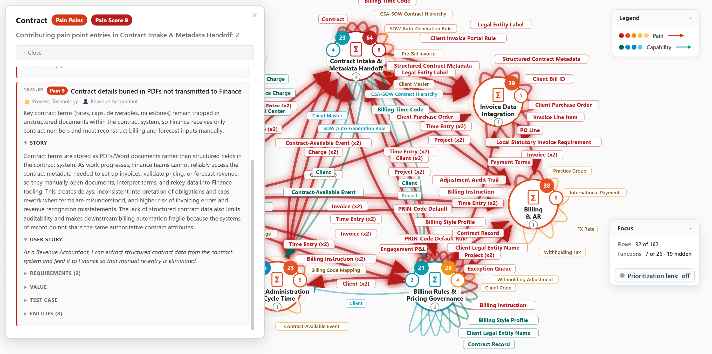
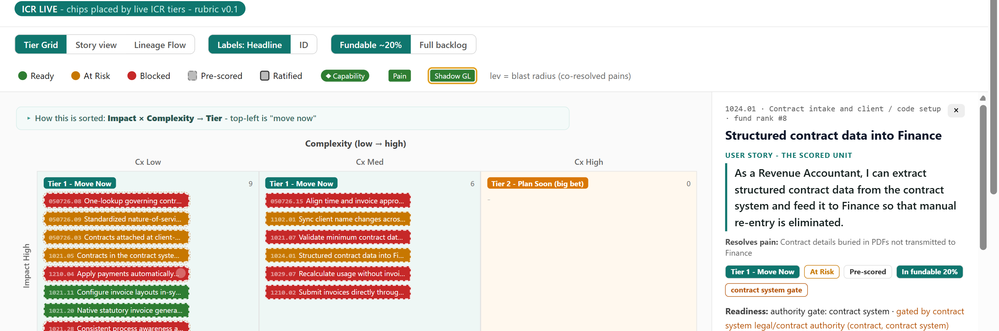
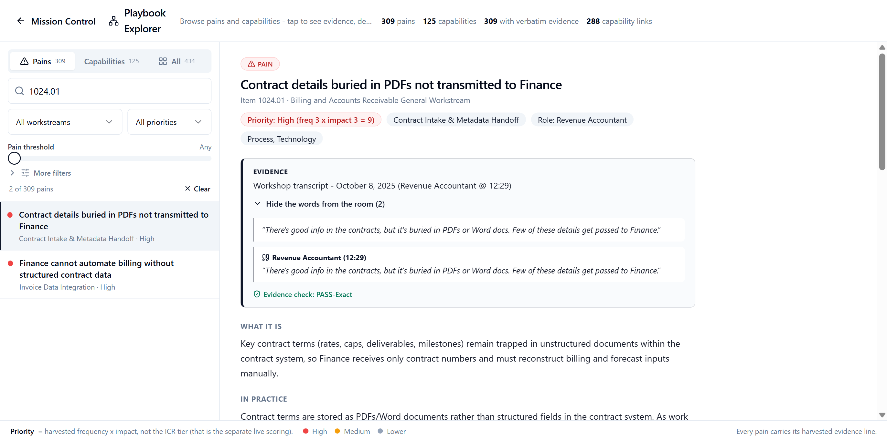

Are you experiencing the same structural gaps other transformation leaders run into?
Three gaps recur in business transformation, regardless of how good the team is.
If you recognize all three, keep reading. If you don't, that's useful information too - this probably isn't for you yet.
What changes when these gaps close?
Close the gaps and three things happen:
Faster relief
Pain stops accumulating sooner.
Faster understanding
Leadership spends less time reconstructing what the organization already learned.
Better sequencing
Less capital gets consumed by avoidable delay, rework, and wrong-order investment.
Why do these gaps persist even with smart people and good consultants?
The problem is not effort. It is distance.
The people closest to the pain are rarely the people deciding what to fund next. In between, the evidence has to travel - and it loses something at every step.
A firsthand observation, from someone doing the work.
Contract details buried in PDFs not transmitted to Finance
"There's good info in the contracts, but it's buried in PDFs or Word docs. Few of these details get passed to Finance." Revenue Accountant - Contract Intake & Metadata Handoff - workshop transcript, October 8, 2025, 12:29A workshop note, written down by someone else.
Key contract terms (rates, caps, deliverables, milestones) remain trapped in unstructured documents within the contract system, so Finance receives only contract numbers and must reconstruct billing and forecast inputs manually.
Revenue Accountant: "Few of these details get passed to Finance."A finding, written up by someone else again.
Contract terms stay in documents; Finance re-keys them by hand.
Source: workshop, Contract Intake & Metadata HandoffA summary, compressed for someone who wasn't there.
Contract data is not structured; billing setup is manual.
A recommendation, built to persuade someone even further away.
Invest in contract data extraction.
An investment room, where the decision gets made.
Contracts
Each step up compresses what the last one knew. By the time it reaches the room, the person deciding is working from the thinnest version of what actually happened.
What would it take to keep the reasoning instead of losing it?
Not better presentations. A durable structure - one that holds the evidence, the reasoning, the context, and the trail back to where it came from, so none of it thins out on the way up.
You already paid to create much of this evidence. The problem is that it is trapped in static documents.
What if the reasoning were still there when the decision had to be made?
That is what we mean by an Investment Conscience - persistent access to the knowledge and evidence that should inform a capital decision, at the moment you're making it, not filed away in a deck nobody opens again.
Where did this finding come from - and can I trace it back to reality?
Every important conclusion should be traceable back to the operational evidence that justified it. Not "consultants recommended it." Specifically: this pain, in this function, described by this person, in these words.
What did we actually learn, and where did each conclusion come from?

Contract details buried in PDFs not transmitted to Finance
Revenue Accountant - Contract Intake & Metadata Handoff Evidence, kept: the workshop transcript, October 8, 2025, 12:29 - the words checked against it, exactly.Click the conclusion, and the evidence underneath it is right there - who said it, in what session, connected to which function and which data flow. A leader who wasn't in the room can follow the exact chain from a stakeholder's own words to the finding built on them. Nothing here has to be taken on faith. This is what a MissionControl Findings Map makes visible.
The cost of leaving this one in place
A real business function stakeholder pain point: the terms that drive invoicing, pricing and forecasting live inside contract documents, and Finance receives only the contract number. Every rate, cap and milestone gets reopened, interpreted and rekeyed by hand. In the evidence record, seventeen other documented pains depend directly on this one - invoice setup, client billing identifiers, purchase-order matching, contract lineage when a client is renamed or acquired, forecasts, renewals, billing automation - and thirty-four once you follow the chain. Relief is recorded as less manual re-entry and a faster close, measured as the reduction in invoices that have to be corrected by hand. That measure comes from the same discovery record as the finding itself.
- Which pain points connect across functions?
- What data moves between them?
- Does this exact conclusion trace back to the transcript, word for word?
Every conclusion here is inspectable, not just visible. Click it, and the reasoning behind it is right there to audit.
"There's good info in the contracts, but it's buried in PDFs or Word docs. Few of these details get passed to Finance."
Given what we now know, where should we invest first?

Contract details buried in PDFs not transmitted to Finance
Revenue Accountant - evidence kept from the Findings Map Move Now. Thirty-four pains trace back to it.The pain that is foundational and high-leverage goes first - not the pain that was proposed first, or argued for loudest. Prioritization stops being a gut call and becomes visible, explainable, and challengeable.
That same pain - the Revenue Accountant rebuilding contract terms by hand from documents Finance was never sent - is the one the evidence ranks near the top of this workstream (the full slate of Billing and AR initiatives being considered together), and the one that thirty-four other documented pains trace back to.
Why fund this first?
Because it is foundational and high-leverage: it is the first link in the chain, with no dependency of its own, and seventeen documented pains depend on it directly, thirty-four in all - more than any other item in the workstream. It scores high on impact for moderate complexity, which places it in the first band, eighth of thirty-six fundable items. One condition sits in front of it: the legal and contract authority over those source documents has to clear it before work can start. The map marks it At Risk for exactly that reason. The map shows that before capital moves, not after.
Recorded in the evidence: seventeen pains depend on this one. Thirteen of them, in frame.

- Which pain is foundational?
- What belongs in the first fundable wave?
- What should wait?
Finding the one pain that thirty-four others trace back to, across three hundred documented pains and every dependency recorded between them, is not something a person does by hand. It is what a connected evidence base makes routine.
The map makes the "why this first" argument visible enough to defend in a room full of people who weren't there for the discovery work.
The reasoning does not stop there.
Why does this rank above that one?
ICR Scoring
Five impact inputs, five complexity inputs, every score open to inspection. This one scores high on impact for moderate complexity, and the condition in front of it is recorded beside the score, not buried under it. Change an input and the ranking moves with it - and leadership can see which one.

What is solving this pain worth?
Investment Calculator
For this one pain point alone: less manual re-entry and a faster close, tracked as the reduction in invoices that have to be corrected by hand, on inputs your own people set. For a sense of scale, closing three gaps like it across an illustrative workstream comes to $548,917 in total risk-adjusted value on a $54,892 recommended investment - 9.0x net ROI. Illustrative example - a different scenario than the Billing and AR workstream above; your organization's own numbers are calculated live.

Where does the evidence live?
Playbook Explorer
The capability that puts structured contract data in front of Finance, filed in your Playbook next to the pain that justified it - and the record of the seventeen pains that depend on it, one click away.

What should a board be able to see?
A board should be able to answer:
Evidence before funding. Accountability after funding.
The business case should survive the investment decision. Most business cases function as permission slips - built to get funding, then forgotten. Ours doesn't end at approval: the reasoning used to authorize an investment should not disappear after funding, and realized value has to be checked against the case that justified the capital.
You recognized the gaps. You saw where the reasoning gets lost. You watched one real pain travel from a stakeholder's own words, through the evidence, to a funding decision - without losing anything along the way, and with everything waiting behind it now in view. MissionControl™ is the missing operating system between what your people know and where you invest.
This is for you if
- You have started a business transformation.
- You have real capital decisions ahead.
- You have already done some operational discovery, current-state documentation, process analysis, workshop work, or equivalent evidence gathering.
- You want future business-transformation investments to be approached with greater fiduciary discipline.
- You want the ability to compare realized value with the value used to justify or forecast the investment.
This probably isn't for you yet if
- You have not started a business transformation.
- You do not have meaningful capital-allocation decisions ahead.
- You have no operational discovery evidence yet - no transcripts, pain points, current-state findings, process documentation, or equivalent source material.
See your own Investment Conscience at work.
Apply this reasoning to your own organization.
We will use a subset of your own operational discovery so that what you see reflects your reality.
What happens next
- We talk. A short conversation to understand the transformation and figure out which existing discovery material is worth using.
- We build. You give us a small subset of material you've already created. We prepare a representative Findings Map and Investment Map around your evidence.
- We interrogate it together. Thirty minutes. Your evidence. Three questions: What do we know? What matters most? What would you fund first - and why?
No charge. You don't send anything until we've spoken.